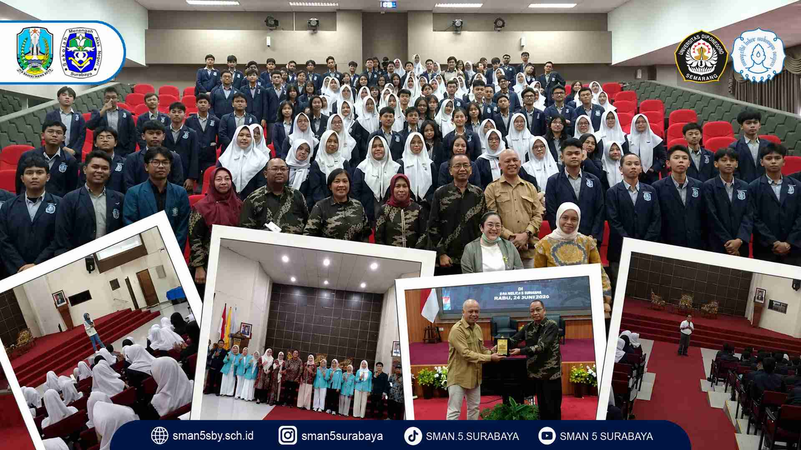
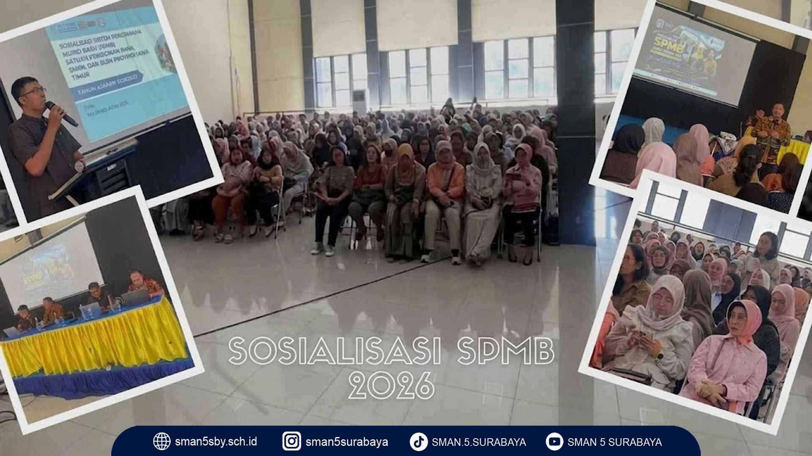
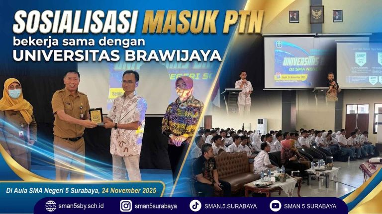
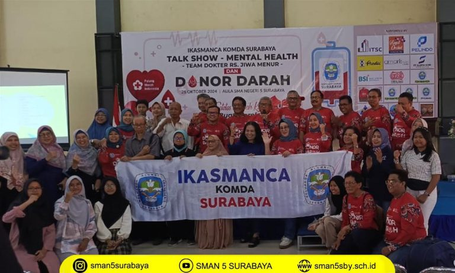

Studi Kampus UNS dan UNDIP
Siswa mengikuti kunjungan dan kegiatan pengenalan kampus di Universitas Sebelas Maret dan Universitas Diponegoro pada 30–31 Maret 2026.
Jl. Kusuma Bangsa No. 21, Surabaya
Berbagai kegiatan sekolah, kunjungan, sosialisasi, dan kerja sama yang mendukung pengalaman belajar siswa.

Siswa mengikuti kunjungan dan kegiatan pengenalan kampus di Universitas Sebelas Maret dan Universitas Diponegoro pada 30–31 Maret 2026.

Kegiatan sosialisasi SPMB kepada masyarakat yang bekerja sama dengan Dinas Pendidikan Provinsi Jawa Timur pada 2 Mei 2026.

SMA Negeri 5 Surabaya bekerja sama dengan Universitas Brawijaya untuk berbagi informasi tentang persiapan masuk perguruan tinggi negeri.

Kegiatan bersama Ikatan Alumni SMAN 5 Surabaya yang mengangkat kesehatan mental dan aksi donor darah.